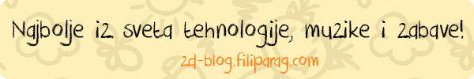

Bezbednost dece na internetu
Postoje određeni rizici upotrebe interneta koje veliki broj korisnika nedovoljno ili uopšte ne poznaje.
Mogu da budu ugroženi vaša privatnost, identitet i reputacija, opljačkan vaš novac na bankovnim računima, potrošeno vaše vreme kod internet provajdera, onesposobljen vaš računar, čak i lična i porodična bezbednost, mogu da budu ugroženi, ako se neoprezno ponašate na internetu.
Zapamtite da na internetu nema opcije "undo" i zato u najvećem broju slučajeva, šta ste uradili, uradili ste. Ukoliko, na primer, objavite svoju fotografiju na nekoj od društvenih mreža, nećete moći da kontrolišete način na koji se ona dalje koristi, kopira ili arhivira.
Da biste sprečili ili umanjili rizike svog boravka na internetu, potrebna vam je višeslojna zaštita:
- Zaštitni softver: anti-virus, anti-spajver i fajervol ili zaštitni set koji sadrži sva tri sigurnosna sistema.
- Ažuriranje računara, blokiranje email-ova neželjenog sadržaja (spam) i korišćenje savremenih pretraživača.
- Redovno kopiranje fajlova (back-up).
- Ako ste neiskusan korisnik, bolje je da ne koristite svoj računar kao administrator.
- Zaštitite se od prisluškivanja i uljeza primenom kriptovanja u svojoj bežičnoj mreži.
